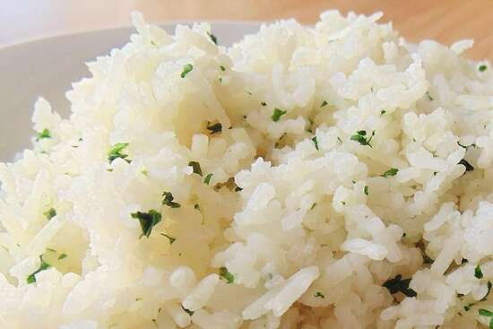

Tampa Coconut Cilantro Rice

This is a Kerala (Southern India) rendition of coconut rice. It's a tad sweeter than regular rice which cuts through much of the spice found in an accompaniment of a spicy curry such as chicken curry.
Ingredients
- 2 cups coconut water, or as needed
- 1 cup basmati rice
- salt, or as desired
- 1 ½ tablespoons chopped fresh cilantro
- 2 teaspoons unsalted butter
Directions
- Bring 1 cup coconut water to a boil in a saucepan. Add basmati rice and salt, cover, and reduce heat to simmer. Stir occasionally, adding more coconut water as needed, until rice is soft but not mushy, about 15 minutes.
- Remove rice from heat, stir in cilantro and butter, and cover again. Let stand until coconut water is absorbed and flavors have blended, about 5 minutes more.
Nutrition Facts
Per Serving: 205 calories; protein 4.4g; carbohydrates 41.3g; fat 2.7g; cholesterol 5.1mg; sodium 708.1mg.
Home